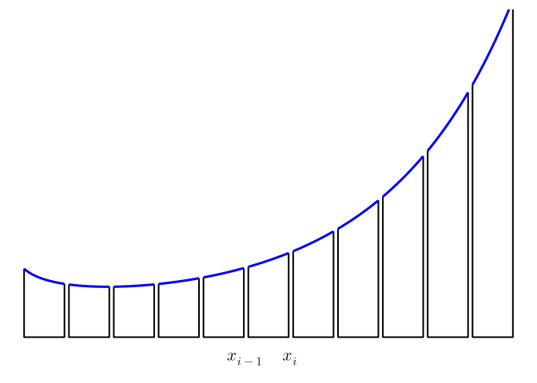
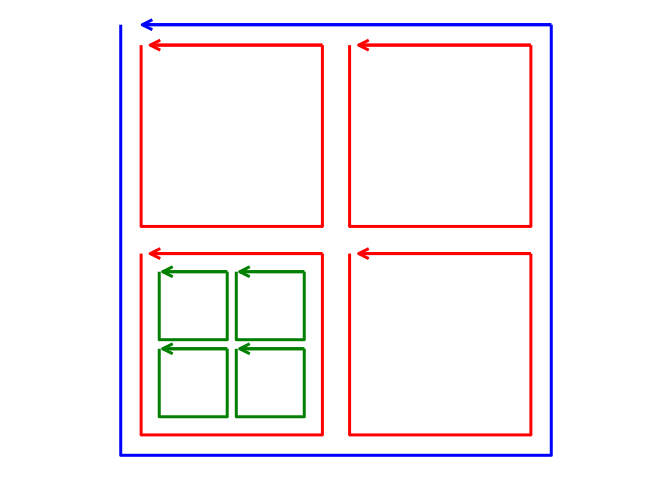
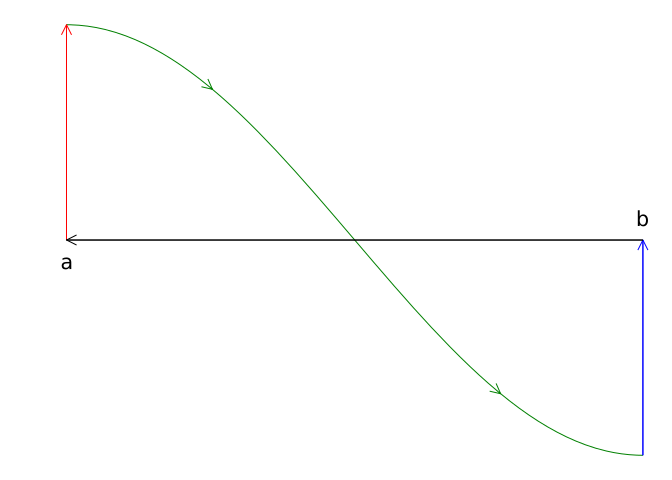
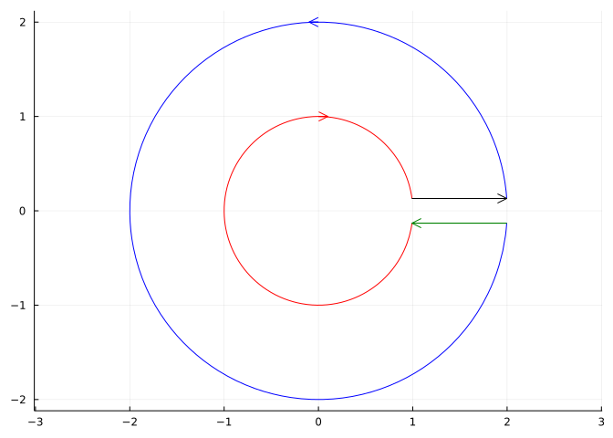
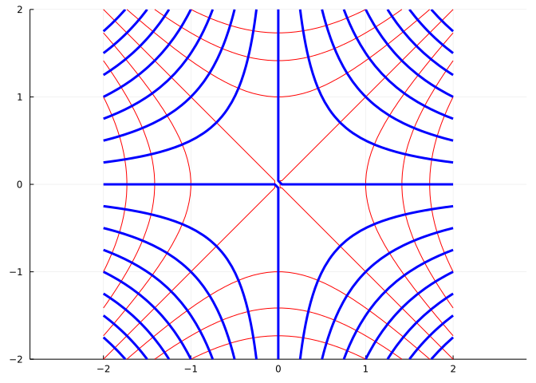

62 Green’s Theorem, Stokes’ Theorem, and the Divergence Theorem
This section uses these add-on packages:
using CalculusWithJulia
using Plots
using QuadGK
using SymPyThe fundamental theorem of calculus is a fan favorite, as it reduces a definite integral, \(\int_a^b f(x) dx\), into the evaluation of a related function at two points: \(F(b)-F(a)\), where the relation is \(F\) is an antiderivative of \(f\). It is a favorite, as it makes life much easier than the alternative of computing a limit of a Riemann sum.
This relationship can be generalized. The key is to realize that the interval \([a,b]\) has boundary \(\{a, b\}\) (a set) and then expressing the theorem as: the integral around some region of \(f\) is the integral, suitably defined, around the boundary of the region for a function related to \(f\).
In an abstract setting, Stokes’ theorem says exactly this with the relationship being the exterior derivative. Here we are not as abstract, we discuss below:
- Green’s theorem, a \(2\)-dimensional theorem, where the region is a planar region, \(D\), and the boundary a simple curve \(C\);
- Stokes’ theorem in \(3\) dimensions, where the region is an open surface, \(S\), in \(R^3\) with boundary, \(C\);
- The Divergence theorem in \(3\) dimensions, where the region is a volume in three dimensions and the boundary its \(2\)-dimensional closed surface.
The related functions will involve the divergence and the curl, previously discussed.
Many of the the examples in this section come from either Strang or Schey.
To make the abstract concrete, consider the one dimensional case of finding the definite integral \(\int_a^b F'(x) dx\). The Riemann sum picture at the microscopic level considers a figure like:
The total area under the blue curve from \(a\) to \(b\), is found by adding the area of each segment of the figure.
Let’s consider now what an integral over the boundary would mean. The region, or interval, \([x_{i-1}, x_i]\) has a boundary that clearly consists of the two points \(x_{i-1}\) and \(x_i\). If we orient the boundary, as we need to for higher dimensional boundaries, using the outward facing direction, then the oriented boundary at the right-hand end point, \(x_i\), would point towards \(+\infty\) and the left-hand end point, \(x_{i-1}\), would be oriented to point to \(-\infty\). An “integral” on the boundary of \(F\) would naturally be \(F(b) \times 1\) plus \(F(a) \times -1\), or \(F(b)-F(a)\).
With this choice of integral over the boundary, we can see much cancellation arises were we to compute this integral for each piece, as we would have with \(a=x_0 < x_1 < \cdots x_{n-1} < x_n=b\):
\[ (F(x_1) - F(x_0)) + (F(x_2)-F(x_1)) + \cdots + (F(x_n) - F(x_{n-1})) = F(x_n) - F(x_0) = F(b) - F(a). \]
That is, with this definition for a boundary integral, the interior pieces of the microscopic approximation cancel and the total is just the integral over the oriented macroscopic boundary \(\{a, b\}\).
But each microscopic piece can be reimagined, as
\[ F(x_{i}) - F(x_{i-1}) = \left(\frac{F(x_{i}) - F(x_{i-1})}{\Delta{x}}\right)\Delta{x} \approx F'(x_i)\Delta{x}. \]
The approximation could be exact were the mean value theorem used to identify a point in the interval, but we don’t pursue that, as the key point is the right hand side is a Riemann sum approximation for a different integral, in this case the integral \(\int_a^b F'(x) dx\). Passing from the microscopic view to an infinitesimal view, the picture gives two interpretations, leading to the Fundamental Theorem of Calculus:
\[ \int_a^b F'(x) dx = F(b) - F(a). \]
The three theorems of this section, Green’s theorem, Stokes’ theorem, and the divergence theorem, can all be seen in this manner: the sum of microscopic boundary integrals leads to a macroscopic boundary integral of the entire region; whereas, by reinterpretation, the microscopic boundary integrals are viewed as Riemann sums, which in the limit become integrals of a related function over the region.
62.1 Green’s theorem
To continue the above analysis for a higher dimension, we consider the following figure hinting at a decomposition of a macroscopic square into subsequent microscopic sub-squares. The boundary of each square is oriented so that the right hand rule comes out of the picture.

Consider the boundary integral \(\oint_c F\cdot\vec{T} ds\) around the smallest (green) squares. We have seen that the curl at a point in a direction is given in terms of the limit. Let the plane be the \(x-y\) plane, and the \(\hat{k}\) direction be the one coming out of the figure. In the derivation of the curl, we saw that the line integral for circulation around the square satisfies:
\[ \lim \frac{1}{\Delta{x}\Delta{y}} \oint_C F \cdot\hat{T}ds = \frac{\partial{F_y}}{\partial{x}} - \frac{\partial{F_x}}{\partial{y}}. \]
If the green squares are small enough, then the line integrals satisfy:
\[ \oint_C F \cdot\hat{T}ds \approx \left( \frac{\partial{F_y}}{\partial{x}} - \frac{\partial{F_x}}{\partial{y}} \right) \Delta{x}\Delta{y} . \]
We interpret the right hand side as a Riemann sum approximation for the \(2\) dimensional integral of the function \(f(x,y) = \frac{\partial{F_x}}{\partial{y}} - \frac{\partial{F_y}}{\partial{x}}=\text{curl}(F)\), the two-dimensional curl. Were the green squares continued to fill out the large blue square, then the sum of these terms would approximate the integral
\[ \iint_S f(x,y) dA = \iint_S \left(\frac{\partial{F_y}}{\partial{x}} - \frac{\partial{F_x}}{\partial{y}}\right) dA = \iint_S \text{curl}(F) dA. \]
However, the microscopic boundary integrals have cancellations that lead to a macroscopic boundary integral. The sum of \(\oint_C F \cdot\hat{T}ds\) over the \(4\) green squares will be equal to \(\oint_{C_r} F\cdot\hat{T}ds\), where \(C_r\) is the red square, as the interior line integral pieces will all cancel off. The sum of \(\oint_{C_r} F \cdot\hat{T}ds\) over the \(4\) red squares will equal \(\oint_{C_b} F \cdot\hat{T}ds\), where \(C_b\) is the oriented path around the blue square, as again the interior line pieces will cancel off. Etc.
This all suggests that the flow integral around the surface of the larger region (the blue square) is equivalent to the integral of the curl component over the region. This is Green’s theorem, as stated by Wikipedia:
Green’s theorem: Let \(C\) be a positively oriented, piecewise smooth, simple closed curve in the plane, and let \(D\) be the region bounded by \(C\). If \(F=\langle F_x, F_y\rangle\), is a vector field on an open region containing \(D\) having continuous partial derivatives then:
\[ \oint_C F\cdot\hat{T}ds = \iint_D \left( \frac{\partial{F_y}}{\partial{x}} - \frac{\partial{F_x}}{\partial{y}} \right) dA= \iint_D \text{curl}(F)dA. \]
The statement of the theorem applies only to regions whose boundaries are simple closed curves. Not all simple regions have such boundaries. An annulus for example. This is a restriction that will be generalized.
62.1.1 Examples
Some examples, following Strang, are:
Computing area
Let \(F(x,y) = \langle -y, x\rangle\). Then \(\frac{\partial{F_y}}{\partial{x}} - \frac{\partial{F_x}}{\partial{y}}=2\), so
\[ \frac{1}{2}\oint_C F\cdot\hat{T}ds = \frac{1}{2}\oint_C (xdy - ydx) = \iint_D dA = A(D). \]
This gives a means to compute the area of a region by integrating around its boundary.
To compute the area of an ellipse, we have:
F(x,y) = [-y,x]
F(v) = F(v...)
r(t) = [a*cos(t),b*sin(t)]
@syms a::positive b::positive t
(1//2) * integrate( F(r(t)) ⋅ diff.(r(t),t), (t, 0, 2PI))
\[
\pi a b
\]
To compute the area of the triangle with vertices \((0,0)\), \((a,0)\) and \((0,b)\) we can orient the boundary counter clockwise. Let \(A\) be the line segment from \((0,b)\) to \((0,0)\), \(B\) be the line segment from \((0,0)\) to \((a,0)\), and \(C\) be the other. Then
\[ \begin{align} \frac{1}{2} \int_A F\cdot\hat{T} ds &=\frac{1}{2} \int_A -ydx = 0\\ \frac{1}{2} \int_B F\cdot\hat{T} ds &=\frac{1}{2} \int_B xdy = 0, \end{align} \]
as on \(A\), \(y=0\) and \(dy=0\) and on \(B\), \(x=0\) and \(dx=0\).
On \(C\) we have \(\vec{r}(t) = (0, b) + t\cdot(1,-b/a) =\langle t, b-(bt)/a\rangle\) from \(t=a\) to \(0\)
\[ \int_C F\cdot \frac{d\vec{r}}{dt} dt = \int_a^0 \langle -b + (bt)/a), t\rangle\cdot\langle 1, -b/a\rangle dt = \int_a^0 -b dt = -bt\mid_{a}^0 = ba. \]
Dividing by \(1/2\) give the familiar answer \(A=(1/2) a b\).
Conservative fields
A vector field is conservative if path integrals for work are independent of the path. We have seen that a vector field that is the gradient of a scalar field will be conservative and vice versa. This led to the vanishing identify \(\nabla\times\nabla(f) = 0\) for a scalar field \(f\).
Is the converse true? Namely, if for some vector field \(F\), \(\nabla\times{F}\) is identically \(0\) is the field conservative?
The answer is yes – if the vector field has continuous partial derivatives and the curl is \(0\) in a simply connected domain.
For the two dimensional case the curl is a scalar. If \(F = \langle F_x, F_y\rangle = \nabla{f}\) is conservative, then \(\partial{F_y}/\partial{x} - \partial{F_x}/\partial{y} = 0\).
Now assume \(\partial{F_y}/\partial{x} - \partial{F_x}/\partial{y} = 0\). Let \(P\) and \(Q\) be two points in the plane. Take any path, \(C_1\) from \(P\) to \(Q\) and any return path, \(C_2\), from \(Q\) to \(P\) that do not cross and such that \(C\), the concatenation of the two paths, satisfies Green’s theorem. Then, as \(F\) is continuous on an open interval containing \(D\), we have:
\[ \begin{align*} 0 &= \iint_D 0 dA \\ &= \iint_D \left(\partial{F_y}/\partial{x} - \partial{F_x}/\partial{y}\right)dA \\ &= \oint_C F \cdot \hat{T} ds \\ &= \int_{C_1} F \cdot \hat{T} ds + \int_{C_2}F \cdot \hat{T} ds. \end{align*} \]
Reversing \(C_2\) to go from \(P\) to \(Q\), we see the two work integrals are identical, that is the field is conservative.
Summarizing:
- If \(F=\nabla{f}\) then \(F\) is conservative.
- If \(F=\langle F_x, F_y\rangle\) has continuous partial derivatives in a simply connected open region with \(\partial{F_y}/\partial{x} - \partial{F_x}/\partial{y}=0\), then in that region \(F\) is conservative and can be represented as the gradient of a scalar function.
For example, let \(F(x,y) = \langle \sin(xy), \cos(xy) \rangle\). Is this a conservative vector field?
We can check by taking partial derivatives. Those of interest are:
\[ \begin{align} \frac{\partial{F_y}}{\partial{x}} &= \frac{\partial{(\cos(xy))}}{\partial{x}} = -\sin(xy) y,\\ \frac{\partial{F_x}}{\partial{y}} &= \frac{\partial{(\sin(xy))}}{\partial{y}} = \cos(xy)x. \end{align} \]
It is not the case that \(\partial{F_y}/\partial{x} - \partial{F_x}/\partial{y}=0\), so this vector field is not conservative.
The conditions of Green’s theorem are important, as this next example shows.
Let \(D\) be the unit disc, \(C\) the unit circle parameterized counter clockwise.
Let \(R(x,y) = \langle -y, x\rangle\) be a rotation field and \(F(x,y) = R(x,y)/(R(x,y)\cdot R(x,y))\). Then:
@syms x::real y::real z::real t::real(x, y, z, t)R(x,y) = [-y,x]
F(x,y) = R(x,y)/(R(x,y)⋅R(x,y))
Fx, Fy = F(x,y)
diff(Fy, x) - diff(Fx, y) |> simplify
\[
0
\]
As the integrand is \(00\), \(\iint_D \left( \partial{F_y}/{\partial{x}}-\partial{F_xy}/{\partial{y}}\right)dA = 0\), as well. But,
\[ F\cdot\hat{T} = \frac{R}{R\cdot{R}} \cdot \frac{R}{R\cdot{R}} = \frac{R\cdot{R}}{(R\cdot{R})^2} = \frac{1}{R\cdot{R}}, \]
so \(\oint_C F\cdot\hat{T}ds = 2\pi\), \(C\) being the unit circle so \(R\cdot{R}=1\).
That is, for this example, Green’s theorem does not apply, as the two integrals are not the same. What isn’t satisfied in the theorem? \(F\) is not continuous at the origin and our curve \(C\) defining \(D\) encircles the origin. So, \(F\) does not have continuous partial derivatives, as is required for the theorem.
More complicated boundary curves
A simple closed curve is one that does not cross itself. Green’s theorem applies to regions bounded by curves which have finitely many crosses provided the orientation used is consistent throughout.
Consider the curve \(y = f(x)\), \(a \leq x \leq b\), assuming \(f\) is continuous, \(f(a) > 0\), and \(f(b) < 0\). We can use Green’s theorem to compute the signed “area” under under \(f\) if we consider the curve in \(R^2\) from \((b,0)\) to \((a,0)\) to \((a, f(a))\), to \((b, f(b))\) and back to \((b,0)\) in that orientation. This will cross at each zero of \(f\).

Let \(A\) label the red line, \(B\) the green curve, \(C\) the blue line, and \(D\) the black line. Then the area is given from Green’s theorem by considering half of the the line integral of \(F(x,y) = \langle -y, x\rangle\) or \(\oint_C (xdy - ydx)\). To that matter we have:
\[ \begin{align} \int_A (xdy - ydx) &= a f(a)\\ \int_C (xdy - ydx) &= b(-f(b))\\ \int_D (xdy - ydx) &= 0\\ \end{align} \]
Finally the integral over \(B\), using integration by parts:
\[ \begin{align} \int_B F(\vec{r}(t))\cdot \frac{d\vec{r}(t)}{dt} dt &= \int_b^a \langle -f(t),t)\rangle\cdot\langle 1, f'(t)\rangle dt\\ &= \int_a^b f(t)dt - \int_a^b tf'(t)dt\\ &= \int_a^b f(t)dt - \left(tf(t)\mid_a^b - \int_a^b f(t) dt\right). \end{align} \]
Combining, we have after cancellation \(\oint (xdy - ydx) = 2\int_a^b f(t) dt\), or after dividing by \(2\) the signed area under the curve.
The region may not be simply connected. A simple case might be the disc: \(1 \leq x^2 + y^2 \leq 4\). In this figure we introduce a cut to make a simply connected region.

The cut leads to a counter-clockwise orientation on the outer ring and a clockwise orientation on the inner ring. If this cut becomes so thin as to vanish, then the line integrals along the lines introducing the cut will cancel off and we have a boundary consisting of two curves with opposite orientations. (If we follow either orientation the closed figure is on the left.)
To see that the area integral of \(F(x,y) = (1/2)\langle -y, x\rangle\) produces the area for this orientation we have, using \(C_1\) as the outer ring, and \(C_2\) as the inner ring:
\[ \begin{align} \oint_{C_1} F \cdot \hat{T} ds &= \int_0^{2\pi} (1/2)(2)\langle -\sin(t), \cos(t)\rangle \cdot (2)\langle-\sin(t), \cos(t)\rangle dt \\ &= (1/2) (2\pi) 4 = 4\pi\\ \oint_{C_2} F \cdot \hat{T} ds &= \int_{0}^{2\pi} (1/2) \langle \sin(t), \cos(t)\rangle \cdot \langle-\sin(t), -\cos(t)\rangle dt\\ &= -(1/2)(2\pi) = -\pi. \end{align} \]
(Using \(\vec{r}(t) = 2\langle \cos(t), \sin(t)\rangle\) for the outer ring and \(\vec{r}(t) = 1\langle \cos(t), -\sin(t)\rangle\) for the inner ring.)
Adding the two gives \(4\pi - \pi = \pi \cdot(b^2 - a^2)\), with \(b=2\) and \(a=1\).
Flow not flux
Green’s theorem has a complement in terms of flow across \(C\). As \(C\) is positively oriented (so the bounded interior piece is on the left of \(\hat{T}\) as the curve is traced), a normal comes by rotating \(90^\circ\) counterclockwise. That is if \(\hat{T} = \langle a, b\rangle\), then \(\hat{N} = \langle b, -a\rangle\).
Let \(F = \langle F_x, F_y \rangle\) and \(G = \langle F_y, -F_x \rangle\), then \(G\cdot\hat{T} = -F\cdot\hat{N}\). The curl formula applied to \(G\) becomes
\[ \frac{\partial{G_y}}{\partial{x}} - \frac{\partial{G_x}}{\partial{y}} = \frac{\partial{-F_x}}{\partial{x}}-\frac{\partial{(F_y)}}{\partial{y}} = -\left(\frac{\partial{F_x}}{\partial{x}} + \frac{\partial{F_y}}{\partial{y}}\right)= -\nabla\cdot{F}. \]
Green’s theorem applied to \(G\) then gives this formula for \(F\):
\[ \oint_C F\cdot\hat{N} ds = -\oint_C G\cdot\hat{T} ds = -\iint_D (-\nabla\cdot{F})dA = \iint_D \nabla\cdot{F}dA. \]
The right hand side integral is the \(2\)-dimensional divergence, so this has the interpretation that the flux through \(C\) (\(\oint_C F\cdot\hat{N} ds\)) is the integral of the divergence. (The divergence is defined in terms of a limit of this picture, so this theorem extends the microscopic view to a bigger view.)
Rather than leave this as an algebraic consequence, we sketch out how this could be intuitively argued from a microscopic picture, the reason being similar to that for the curl, where we considered the small green boxes. In the generalization to dimension \(3\) both arguments are needed for our discussion:
Consider now a \(2\)-dimensional region split into microscopic boxes; we focus now on two adjacent boxes, \(A\) and \(B\):

The integrand \(F\cdot\hat{N}\) for \(A\) will differ from that for \(B\) by a minus sign, as the field is the same, but the normal carries an opposite sign. Hence the contribution to the line integral around \(A\) along this part of the box partition will cancel out with that around \(B\). The only part of the line integral that will not cancel out for such a partition will be the boundary pieces of the overall shape.
This figure shows in red the parts of the line integrals that will cancel for a more refined grid.

Again, the microscopic boundary integrals when added will give a macroscopic boundary integral due to cancellations.
But, as seen in the derivation of the divergence, only modified for \(2\) dimensions, we have \(\nabla\cdot{F} = \lim \frac{1}{\Delta S} \oint_C F\cdot\hat{N}\), so for each cell
\[ \oint_{C_i} F\cdot\hat{N} \approx \left(\nabla\cdot{F}\right)\Delta{x}\Delta{y}, \]
an approximating Riemann sum for \(\iint_D \nabla\cdot{F} dA\). This yields:
\[ \oint_C (F \cdot\hat{N}) dA = \sum_i \oint_{C_i} (F \cdot\hat{N}) dA \approx \sum \left(\nabla\cdot{F}\right)\Delta{x}\Delta{y} \approx \iint_S \nabla\cdot{F}dA, \]
the approximation signs becoming equals signs in the limit.
Example
Let \(F(x,y) = \langle ax , by\rangle\), and \(D\) be the square with side length \(2\) centered at the origin. Verify that the flow form of Green’s theorem holds.
We have the divergence is simply \(a + b\) so \(\iint_D (a+b)dA = (a+b)A(D) = 4(a+b)\).
The integral of the flow across \(C\) consists of \(4\) parts. By symmetry, they all should be similar. We consider the line segment connecting \((1,-1)\) to \((1,1)\) (which has the proper counterclockwise orientation):
\[ \int_C F \cdot \hat{N} ds= \int_{-1}^1 \langle F_x, F_y\rangle\cdot\langle 0, 1\rangle ds = \int_{-1}^1 b dy = 2b. \]
Integrating across the top will give \(2a\), along the bottom \(2a\), and along the left side \(2b\) totaling \(4(a+b)\).
Next, let \(F(x,y) = \langle -y, x\rangle\). This field rotates, and we see has no divergence, as \(\partial{F_x}/\partial{x} = \partial{(-y)}/\partial{x} = 0\) and \(\partial{F_y}/\partial{y} = \partial{x}/\partial{y} = 0\). As such, the area integral in Green’s theorem is \(0\). As well, \(F\) is parallel to \(\hat{T}\) so orthogonal to \(\hat{N}\), hence \(\oint F\cdot\hat{N}ds = \oint 0ds = 0\). For any region \(S\) there is no net flow across the boundary and no source or sink of flow inside.
Example: stream functions
Strang compiles the following equivalencies (one implies the others) for when the total flux is \(0\) for a vector field with continuous partial derivatives:
- \[ \oint F\cdot\hat{N} ds = 0 \]
- for all curves connecting \(P\) to \(Q\), \(\int_C F\cdot\hat{N}\) has the same value
- There is a stream function \(g(x,y)\) for which \(F_x = \partial{g}/\partial{y}\) and \(F_y = -\partial{g}/\partial{x}\). (This says \(\nabla{g}\) is orthogonal to \(F\).)
- the components have zero divergence: \(\partial{F_x}/\partial{x} + \partial{F_y}/\partial{y} = 0\).
Strang calls these fields source free as the divergence is \(0\).
A stream function plays the role of a scalar potential, but note the minus sign and order of partial derivatives. These are accounted for by saying \(\langle F_x, F_y, 0\rangle = \nabla\times\langle 0, 0, g\rangle\), in Cartesian coordinates. Streamlines are tangent to the flow of the velocity vector of the flow and in two dimensions are perpendicular to field lines formed by the gradient of a scalar function.
Potential flow uses a scalar potential function to describe the velocity field through \(\vec{v} = \nabla{f}\). As such, potential flow is irrotational due to the curl of a conservative field being the zero vector. Restricting to two dimensions, this says the partials satisfy \(\partial{v_y}/\partial{x} - \partial{v_x}/\partial{y} = 0\). For an incompressible flow (like water) the velocity will have \(0\) divergence too. That is \(\nabla\cdot\nabla{f} = 0\) - \(f\) satisfies Laplace’s equation.
By the equivalencies above, an incompressible potential flow means in addition to a potential function, \(f\), there is a stream function \(g\) satisfying \(v_x = \partial{g}/\partial{y}\) and \(v_y=-\partial{g}/\partial{x}\).
The gradient of \(f=\langle v_x, v_y\rangle\) is orthogonal to the contour lines of \(f\). The gradient of \(g=\langle -v_y, v_x\rangle\) is orthogonal to the gradient of \(f\), so are tangents to the contour lines of \(f\). Reversing, the gradient of \(f\) is tangent to the contour lines of \(g\). If the flow follows the velocity field, then the contour lines of \(g\) indicate the flow of the fluid.
As an example consider the following in polar coordinates:
\[ f(r, \theta) = A r^n \cos(n\theta),\quad g(r, \theta) = A r^n \sin(n\theta). \]
The constant \(A\) just sets the scale, the parameter \(n\) has a qualitative effect on the contour lines. Consider \(n=2\) visualized below:
gr() # pyplot doesn't like the color as specified below.
n = 2
f(r,theta) = r^n * cos(n*theta)
g(r, theta) = r^n * sin(n*theta)
f(v) = f(v...); g(v)= g(v...)
Φ(x,y) = [sqrt(x^2 + y^2), atan(y,x)]
Φ(v) = Φ(v...)
xs = ys = range(-2,2, length=50)
p = contour(xs, ys, f∘Φ, color=:red, legend=false, aspect_ratio=:equal)
contour!(p, xs, ys, g∘Φ, color=:blue, linewidth=3)
#pyplot()
p
The fluid would flow along the blue (stream) lines. The red lines have equal potential along the line.
62.2 Stokes’ theorem

Were the figure of Jiffy Pop popcorn animated, the surface of foil would slowly expand due to pressure of popping popcorn until the popcorn was ready. However, the boundary would remain the same. Many different surfaces can have the same boundary. Take for instance the upper half unit sphere in \(R^3\) it having the curve \(x^2 + y^2 = 1\) as a boundary curve. This is the same curve as the surface of the cone \(z = 1 - (x^2 + y^2)\) that lies above the \(x-y\) plane. This would also be the same curve as the surface formed by a Mickey Mouse glove if the collar were scaled and positioned onto the unit circle.
Imagine if instead of the retro labeling, a rectangular grid were drawn on the surface of the Jiffy Pop popcorn before popping. By Green’s theorem, the integral of the curl of a vector field \(F\) over this surface reduces to just an accompanying line integral over the boundary, \(C\), where the orientation of \(C\) is in the \(\hat{k}\) direction. The intuitive derivation being that the curl integral over the grid will have cancellations due to adjacent cells having shared paths being traversed in both directions.
Now imagine the popcorn expanding, but rather than worry about burning, focusing instead on what happens to the integral of the curl in the direction of the normal, we have
\[ \nabla\times{F} \cdot\hat{N} = \lim \frac{1}{\Delta{S}} \oint_C F\cdot\hat{T} ds \approx \frac{1}{\Delta{S}} F\cdot\hat{T} \Delta{s}. \]
This gives the series of approximations:
\[ \begin{align*} \oint_C F\cdot\hat{T} ds &= \sum \oint_{C_i} F\cdot\hat{T} ds \\ &\approx \sum F\cdot\hat{T} \Delta s \\ &\approx \sum \nabla\times{F}\cdot\hat{N} \Delta{S} \\ &\approx \iint_S \nabla\times{F}\cdot\hat{N} dS. \end{align*} \]
In terms of our expanding popcorn, the boundary integral - after accounting for cancellations, as in Green’s theorem - can be seen as a microscopic sum of boundary integrals each of which is approximated by a term \(\nabla\times{F}\cdot\hat{N} \Delta{S}\) which is viewed as a Riemann sum approximation for the the integral of the curl over the surface. The cancellation depends on a proper choice of orientation, but with that we have:
Stokes’ theorem: Let \(S\) be an orientable smooth surface in \(R^3\) with boundary \(C\), \(C\) oriented so that the chosen normal for \(S\) agrees with the right-hand rule for \(C\)’s orientation. Then if \(F\) has continuous partial derivatives
\[ \oint_C F \cdot\hat{T} ds = \iint_S (\nabla\times{F})\cdot\hat{N} dA. \]
Green’s theorem is an immediate consequence upon viewing the region in \(R^2\) as a surface in \(R^3\) with normal \(\hat{k}\).
62.2.1 Examples
Example
Our first example involves just an observation. For any simply connected surface \(S\) without boundary (such as a sphere) the integral \(\oint_S \nabla\times{F}dS=0\), as the line integral around the boundary must be \(0\), as there is no boundary.
Example
Let \(F(x,y,z) = \langle x^2, 0, y^2\rangle\) and \(C\) be the circle \(x^2 + z^2 = 1\) with \(y=0\). Find \(\oint_C F\cdot\hat{T}ds\).
We can use Stoke’s theorem with the surface being just the disc, so that \(\hat{N} = \hat{j}\). This makes the computation easy:
Fₛ(x,y,z) = [x^2, 0, y^2]
CurlFₛ = curl(Fₛ(x,y,z), [x,y,z])3-element Vector{Sym}:
2⋅y
0
0We have \(\nabla\times{F}\cdot\hat{N} = 0\), so the answer is \(0\).
We could have directly computed this. Let \(r(t) = \langle \cos(t), 0, \sin(t)\rangle\). Then we have:
rₛ(t) = [cos(t), 0, sin(t)]
rpₛ = diff.(rₛ(t), t)
integrandₛ = Fₛ(rₛ(t)...) ⋅ rpₛ
\[
- \sin{\left(t \right)} \cos^{2}{\left(t \right)}
\]
The integrand isn’t obviously going to yield \(0\) for the integral, but through symmetry:
integrate(integrandₛ, (t, 0, 2PI))
\[
0
\]
Example: Ampere’s circuital law
(Schey) Suppose a current \(I\) flows along a line and \(C\) is a path encircling the current with orientation such that the right hand rule points in the direction of the current flow.
Ampere’s circuital law relates the line integral of the magnetic field to the induced current through:
\[ \oint_C B\cdot\hat{T} ds = \mu_0 I. \]
The goal here is to re-express this integral law to produce a law at each point of the field. Let \(S\) be a surface with boundary \(C\), Let \(J\) be the current density - \(J=\rho v\), with \(\rho\) the density of the current (not time-varying) and \(v\) the velocity. The current can be re-expressed as \(I = \iint_S J\cdot\hat{n}dA\). (If the current flows through a wire and \(S\) is much bigger than the wire, this is still valid as \(\rho=0\) outside of the wire.)
We then have:
\[ \mu_0 \iint_S J\cdot\hat{N}dA = \mu_0 I = \oint_C B\cdot\hat{T} ds = \iint_S (\nabla\times{B})\cdot\hat{N}dA. \]
As \(S\) and \(C\) are arbitrary, this implies the integrands of the surface integrals are equal, or:
\[ \nabla\times{B} = \mu_0 J. \]
Example: Faraday’s law
(Strang) Suppose \(C\) is a wire and there is a time-varying magnetic field \(B(t)\). Then Faraday’s law says the flux passing within \(C\) through a surface \(S\) with boundary \(C\) of the magnetic field, \(\phi = \iint B\cdot\hat{N}dS\), induces an electric field \(E\) that does work:
\[ \oint_C E\cdot\hat{T}ds = -\frac{\partial{\phi}}{\partial{t}}. \]
Faraday’s law is an empirical statement. Stokes’ theorem can be used to produce one of Maxwell’s equations. For any surface \(S\), as above with its boundary being \(C\), we have both:
\[ -\iint_S \left(\frac{\partial{B}}{\partial{t}}\cdot\hat{N}\right)dS = -\frac{\partial{\phi}}{\partial{t}} = \oint_C E\cdot\hat{T}ds = \iint_S (\nabla\times{E}) dS. \]
This is true for any capping surface for \(C\). Shrinking \(C\) to a point means it will hold for each point in \(R^3\). That is:
\[ \nabla\times{E} = -\frac{\partial{B}}{\partial{t}}. \]
Example: Conservative fields
Green’s theorem gave a characterization of \(2\)-dimensional conservative fields, Stokes’ theorem provides a characterization for \(3\) dimensional conservative fields (with continuous derivatives):
- The work \(\oint_C F\cdot\hat{T} ds = 0\) for every closed path
- The work \(\int_P^Q F\cdot\hat{T} ds\) is independent of the path between \(P\) and \(Q\)
- for a scalar potential function \(\phi\), \(F = \nabla{\phi}\)
- The curl satisfies: \(\nabla\times{F} = \vec{0}\) (and the domain is simply connected).
Stokes’s theorem can be used to show the first and fourth are equivalent.
First, if \(0 = \oint_C F\cdot\hat{T} ds\), then by Stokes’ theorem \(0 = \int_S \nabla\times{F} dS\) for any orientable surface \(S\) with boundary \(C\). For a given point, letting \(C\) shrink to that point can be used to see that the cross product must be \(0\) at that point.
Conversely, if the cross product is zero in a simply connected region, then take any simple closed curve, \(C\) in the region. If the region is simply connected then there exists an orientable surface, \(S\) in the region with boundary \(C\) for which: \(\oint_C F\cdot{N} ds = \iint_S (\nabla\times{F})\cdot\hat{N}dS= \iint_S \vec{0}\cdot\hat{N}dS = 0\).
The construction of a scalar potential function from the field can be done as illustrated in this next example.
Take \(F = \langle yz^2, xz^2, 2xyz \rangle\). Verify \(F\) is conservative and find a scalar potential \(\phi\).
To verify that \(F\) is conservative, we find its curl to see that it is \(\vec{0}\):
F(x,y,z) = [y*z^2, x*z^2, 2*x*y*z]
curl(F(x,y,z), [x,y,z])3-element Vector{Sym}:
0
0
0We need \(\phi\) with \(\partial{\phi}/\partial{x} = F_x = yz^2\). To that end, we integrate in \(x\):
\[ \phi(x,y,z) = \int yz^2 dx = xyz^2 + g(y,z), \]
the function \(g(y,z)\) is a “constant” of integration (it doesn’t depend on \(x\)). That \(\partial{\phi}/\partial{x} = F_x\) is true is easy to verify. Now, consider the partial in \(y\):
\[ \frac{\partial{\phi}}{\partial{y}} = xz^2 + \frac{\partial{g}}{\partial{y}} = F_y = xz^2. \]
So we have \(\frac{\partial{g}}{\partial{y}}=0\) or \(g(y,z) = h(z)\), some constant in \(y\). Finally, we must have \(\partial{\phi}/\partial{z} = F_z\), or
\[ \frac{\partial{\phi}}{\partial{z}} = 2xyz + h'(z) = F_z = 2xyz, \]
So \(h'(z) = 0\). This value can be any constant, even \(0\) which we take, so that \(g(y,z) = 0\) and \(\phi(x,y,z) = xyz^2\) is a scalar potential for \(F\).
Example
Let \(F(x,y,z) = \nabla(xy^2z^3) = \langle y^2z^3, 2xyz^3, 3xy^2z^2\rangle\). Show that the line integrals around the unit circle in the \(x-y\) plane and the \(y-z\) planes are \(0\), as \(F\) is conservative.
Fxyz = ∇(x*y^2*z^3)3-element Vector{Sym}:
y^2*z^3
2*x*y*z^3
3*x*y^2*z^2r(t) = [cos(t), sin(t), 0]
rp = diff.(r(t), t)
Ft = subs.(Fxyz, x .=> r(t)[1], y.=> r(t)[2], z .=> r(t)[3])
integrate(Ft ⋅ rp, (t, 0, 2PI))
\[
0
\]
(This is trivial, as Ft is \(0\), as each term has a \(z\) factor of \(0\).)
In the \(y-z\) plane we have:
r(t) = [0, cos(t), sin(t)]
rp = diff.(r(t), t)
Ft = subs.(Fxyz, x .=> r(t)[1], y.=> r(t)[2], z .=> r(t)[3])
integrate(Ft ⋅ rp, (t, 0, 2PI))
\[
0
\]
This is also easy, as Ft has only an x component and rp has only y and z components, so the two are orthogonal.
Example
In two dimensions the vector field \(F(x,y) = \langle -y, x\rangle/(x^2+y^2) = S(x,y)/\|R\|^2\) is irrotational (\(0\) curl) and has \(0\) divergence, but is not conservative in \(R^2\), as with \(C\) being the unit disk we have \(\oint_C F\cdot\hat{T}ds = \int_0^{2\pi} \langle -\sin(\theta),\cos(\theta)\rangle \cdot \langle-\sin(\theta), \cos(\theta)\rangle/1 d\theta = 2\pi\). This is because \(F\) is not continuously differentiable at the origin, so the path \(C\) is not in a simply connected domain where \(F\) is continuously differentiable. (Were \(C\) to avoid the origin, the integral would be \(0\).)
In three dimensions, removing a single point in a domain does change simple connectedness, but removing an entire line will. So the function \(F(x,y,z) =\langle -y,x,0\rangle/(x^2+y^2)\rangle\) will have \(0\) curl, \(0\) divergence, but won’t be conservative in a domain that includes the \(z\) axis.
However, the function \(F(x,y,z) = \langle x, y,z\rangle/\sqrt{x^2+y^2+z^2}\) has curl \(0\), except at the origin. However, \(R^3\) less the origin, as a domain, is simply connected, so \(F\) will be conservative.
62.3 Divergence theorem
The divergence theorem is a consequence of a simple observation. Consider two adjacent cubic regions that share a common face. The boundary integral, \(\oint_S F\cdot\hat{N} dA\), can be computed for each cube. The surface integral requires a choice of normal, and the convention is to use the outward pointing normal. The common face of the two cubes has different outward pointing normals, the difference being a minus sign. As such, the contribution of the surface integral over this face for one cube is cancelled out by the contribution of the surface integral over this face for the adjacent cube. As with Green’s theorem, this means for a cubic partition, that only the contribution over the boundary is needed to compute the boundary integral. In formulas, if \(V\) is a \(3\) dimensional cubic region with boundary \(S\) and it is partitioned into smaller cubic subregions, \(V_i\) with surfaces \(S_i\), we have:
\[ \oint_S F\cdot{N} dA = \sum \oint_{S_i} F\cdot{N} dA. \]
If the partition provides a microscopic perspective, then the divergence approximation \(\nabla\cdot{F} \approx (1/\Delta{V_i}) \oint_{S_i} F\cdot{N} dA\) can be used to say:
\[ \oint_S F\cdot{N} dA = \sum \oint_{S_i} F\cdot{N} dA \approx \sum (\nabla\cdot{F})\Delta{V_i} \approx \iiint_V \nabla\cdot{F} dV, \]
the last approximation through a Riemann sum approximation. This heuristic leads to:
The divergence theorem: Suppose \(V\) is a \(3\)-dimensional volume which is bounded (compact) and has a boundary, \(S\), that is piecewise smooth. If \(F\) is a continuously differentiable vector field defined on an open set containing \(V\), then:
\[ \iiint_V (\nabla\cdot{F}) dV = \oint_S (F\cdot\hat{N})dS. \]
That is, the volume integral of the divergence can be computed from the flux integral over the boundary of \(V\).
62.3.1 Examples of the divergence theorem
Example
Verify the divergence theorem for the vector field \(F(x,y,z) = \langle xy, yz, zx\rangle\) for the cubic box centered at the origin with side lengths \(2\).
We need to compute two terms and show they are equal. We begin with the volume integral:
F₁(x,y,z) = [x*y, y*z, z*x]
DivF₁ = divergence(F₁(x,y,z), [x,y,z])
integrate(DivF₁, (x, -1,1), (y,-1,1), (z, -1,1))
\[
0
\]
The total integral is \(0\) by symmetry, not due to the divergence being \(0\), as it is \(x+y+z\).
As for the surface integral, we have \(6\) sides to consider. We take the sides with \(\hat{N}\) being \(\pm\hat{i}\):
Nhat = [1,0,0]
integrate((F₁(x,y,z) ⋅ Nhat), (y, -1, 1), (z, -1,1)) # at x=1
\[
0
\]
In fact, all \(6\) sides will be \(0\), as in this case \(F \cdot \hat{i} = xy\) and at \(x=1\) the surface integral is just \(\int_{-1}^1\int_{-1}^1 y dy dz = 0\), as \(y\) is an odd function.
As such, the two sides of the Divergence theorem are both \(0\), so the theorem is verified.
Example
(From Strang) If the temperature inside the sun is \(T = \log(1/\rho)\) find the heat flow \(F=-\nabla{T}\); the source, \(\nabla\cdot{F}\); and the flux, \(\iint F\cdot\hat{N}dS\). Model the sun as a ball of radius \(\rho_0\).
We have the heat flow is simply:
Rₗ(x,y,z) = norm([x,y,z])
Tₗ(x,y,z) = log(1/Rₗ(x,y,z))
HeatFlow = -diff.(Tₗ(x,y,z), [x,y,z])3-element Vector{Sym}:
x/(x^2 + y^2 + z^2)
y/(x^2 + y^2 + z^2)
z/(x^2 + y^2 + z^2)We may recognize this as \(\rho/\|\rho\|^2 = \hat{\rho}/\|\rho\|\).
The source is
Divₗ = divergence(HeatFlow, [x,y,z]) |> simplify
\[
\frac{1}{x^{2} + y^{2} + z^{2}}
\]
Which would simplify to \(1/\rho^2\).
Finally, the surface integral over the surface of the sun is an integral over a sphere of radius \(\rho_0\). We could use spherical coordinates to compute this, but note instead that the normal is \(\hat{\rho}\) so, \(F \cdot \hat{N} = 1/\rho = 1/\rho_0\) over this surface. So the surface integral is simple the surface area times \(1/\rho_0\): \(4\pi\rho_0^2/\rho_0 = 4\pi\rho_0\).
Finally, though \(F\) is not continuous at the origin, the divergence theorem’s result holds. Using spherical coordinates we have:
@syms rho::real rho_0::real phi::real theta::real
Jac = rho^2 * sin(phi)
integrate(1/rho^2 * Jac, (rho, 0, rho_0), (theta, 0, 2PI), (phi, 0, PI))
\[
4 \pi \rho_{0}
\]
Example: Continuity equation (Schey)
Imagine a venue with a strict cap on the number of persons at one time. Two ways to monitor this are: at given times, a count, or census, of all the people in the venue can be made. Or, when possible, a count of people coming in can be compared to a count of people coming out and the difference should yield the number within. Either works well when access is limited and the venue small, but the latter can also work well on a larger scale. For example, for the subway system of New York it would be impractical to attempt to count all the people at a given time using a census, but from turnstile data an accurate count can be had, as turnstiles can be used to track people coming in and going out. But turnstiles can be restricting and cause long(ish) lines. At some stores, new technology is allowing checkout-free shopping. Imagine if each customer had an app on their phone that can be used to track location. As they enter a store, they can be recorded, as they exit they can be recorded and if RFID tags are on each item in the store, their “purchases” can be tallied up and billed through the app. (As an added bonus to paying fewer cashiers, stores can also track on a step-by-step basis how a customer interacts with the store.) In any of these three scenarios, a simple thing applies: the total number of people in a confined region can be counted by counting how many crossed the boundary (and in which direction) and the change in time of the count can be related to the change in time of the people crossing.
For a more real world example, the New York Times ran an article about estimating the size of a large protest in Hong Kong:
Crowd estimates for Hong Kong’s large pro-democracy protests have been a point of contention for years. The organizers and the police often release vastly divergent estimates. This year’s annual pro-democracy protest on Monday, July 1, was no different. Organizers announced 550,000 people attended; the police said 190,000 people were there at the peak.
But for the first time in the march’s history, a group of researchers combined artificial intelligence and manual counting techniques to estimate the size of the crowd, concluding that 265,000 people marched.
On Monday, the A.I. team attached seven iPads to two major footbridges along the march route. Volunteers doing manual counts were also stationed next to the cameras, to help verify the computer count.
The article describes some issues in counting such a large group:
The high density of the crowd and the moving nature of these protests make estimating the turnout very challenging. For more than a decade, groups have stationed teams along the route and manually counted the rate of people passing through to derive the total number of participants.
As there are no turnstiles to do an accurate count and too many points to come and go, this technique can be too approximate. The article describes how artificial intelligence was used to count the participants. The Times tried their own hand:
Analyzing a short video clip recorded on Monday, The Times’s model tried to detect people based on color and shape, and then tracked the figures as they moved across the screen. This method helps avoid double counting because the crowd generally flowed in one direction.
The divergence theorem provides two means to compute a value, the point here is to illustrate that there are (at least) two possible ways to compute crowd size. Which is better depends on the situation.
Following Schey, we now consider a continuous analog to the crowd counting problem through a flow with a non-uniform density that may vary in time. Let \(\rho(x,y,z;t)\) be the time-varying density and \(v(x,y,z;t)\) be a vector field indicating the direction of flow. Consider some three-dimensional volume, \(V\), with boundary \(S\) (though two-dimensional would also be applicable). Then these integrals have interpretations:
\[ \begin{align} \iiint_V \rho dV &&\quad\text{Amount contained within }V\\ \frac{\partial}{\partial{t}} \iiint_V \rho dV &= \iiint_V \frac{\partial{\rho}}{\partial{t}} dV &\quad\text{Change in time of amount contained within }V \end{align} \]
Moving the derivative inside the integral requires an assumption of continuity. Assume the material is conserved, meaning that if the amount in the volume \(V\) changes it must flow in and out through the boundary. The flow out through \(S\), the boundary of \(V\), is
\[ \oint_S (\rho v)\cdot\hat{N} dS, \]
using the customary outward pointing normal for the orientation of \(S\).
So we have:
\[ \iiint_V \frac{\partial{\rho}}{\partial{t}} dV = -\oint_S (\rho v)\cdot\hat{N} dS = - \iiint_V \nabla\cdot\left(\rho v\right)dV. \]
The last equality by the divergence theorem, the minus sign as a positive change in amount within \(V\) means flow opposite the outward pointing normal for \(S\).
The volume \(V\) was arbitrary. While it isn’t the case that two integrals being equal implies the integrands are equal, it is the case that if the two integrals are equal for all volumes and the two integrands are continuous, then they are equal.
That is, under the assumptions that material is conserved and density is continuous a continuity equation can be derived from the divergence theorem:
\[ \nabla\cdot(\rho v) = - \frac{\partial{\rho}}{dt}. \]
Example: The divergence theorem can fail to apply
The assumption of the divergence theorem that the vector field be continuously differentiable is important, as otherwise it may not hold. With \(R(x,y,z) = \langle x,y,z\rangle\) take for example \(F = (R/\|R\|) / \|R\|^2)\). This has divergence
R(x,y,z) = [x,y,z]
F(x,y,z) = R(x,y,z) / norm(R(x,y,z))^3
divergence(F(x,y,z), [x,y,z]) |> simplify
\[
0
\]
The simplification done by SymPy masks the presence of \(R^{-5/2}\) when taking the partial derivatives, which means the field is not continuously differentiable at the origin.
Were the divergence theorem applicable, then the integral of \(F\) over the unit sphere would mean:
\[ 0 = \iiint_V \nabla\cdot{F} dV = \oint_S F\cdot{N}dS = \oint_S \frac{R}{\|R\|^3} \cdot{R} dS = \oint_S 1 dS = 4\pi. \]
Clearly, as \(0\) is not equal to \(4\pi\), the divergence theorem can not apply.
However, it does apply to any volume not enclosing the origin. So without any calculation, if \(V\) were shifted over by \(2\) units the volume integral over \(V\) would be \(0\) and the surface integral over \(S\) would be also.
As already seen, the inverse square law here arises in the electrostatic force formula, and this same observation was made in the context of Gauss’s law.
62.4 Questions
Question
(Schey) What conditions on \(F: R^2 \rightarrow R^2\) imply \(\oint_C F\cdot d\vec{r} = A\)? (\(A\) is the area bounded by the simple, closed curve \(C\))
Question
For \(C\), a simple, closed curve parameterized by \(\vec{r}(t) = \langle x(t), y(t) \rangle\), \(a \leq t \leq b\). The area contained can be computed by \(\int_a^b x(t) y'(t) dt\). Let \(\vec{r}(t) = \sin(t) \cdot \langle \cos(t), \sin(t)\rangle\).
Find the area inside \(C\)
Question
Let \(\hat{N} = \langle \cos(t), \sin(t) \rangle\) and \(\hat{T} = \langle -\sin(t), \cos(t)\rangle\). Then polar coordinates can be viewed as the parametric curve \(\vec{r}(t) = r(t) \hat{N}\).
Applying Green’s theorem to the vector field \(F = \langle -y, x\rangle\) which along the curve is \(r(t) \hat{T}\) we know the area formula \((1/2) (\int xdy - \int y dx)\). What is this in polar coordinates (using \(\theta=t\)?) (Using \((r\hat{N}' = r'\hat{N} + r \hat{N}' = r'\hat{N} +r\hat{T}\) is useful.)
Question
Let \(\vec{r}(t) = \langle \cos^3(t), \sin^3(t)\rangle\), \(0\leq t \leq 2\pi\). (This describes a hypocycloid.) Compute the area enclosed by the curve \(C\) using Green’s theorem.
Question
Let \(F(x,y) = \langle y, x\rangle\). We verify Green’s theorem holds when \(S\) is the unit square, \([0,1]\times[0,1]\).
The curl of \(F\) is
As the curl is a constant, say \(c\), we have \(\iint_S (\nabla\times{F}) dS = c \cdot 1\). This is?
To integrate around the boundary we have \(4\) terms: the path \(A\) connecting \((0,0)\) to \((1,0)\) (on the \(x\) axis), the path \(B\) connecting \((1,0)\) to \((1,1)\), the path \(C\) connecting \((1,1)\) to \((0,1)\), and the path \(D\) connecting \((0,1)\) to \((0,0)\) (along the \(y\) axis).
Which path has tangent \(\hat{j}\)?
Along path \(C\), \(F(x,y) = [1,x]\) and \(\hat{T}=-\hat{i}\) so \(F\cdot\hat{T} = -1\). The path integral \(\int_C (F\cdot\hat{T})ds = -1\). What is the value of the path integral over \(A\)?
What is the integral over the oriented boundary of \(S\)?
Question
Suppose \(F: R^2 \rightarrow R^2\) is a vector field such that \(\nabla\cdot{F}=0\) except at the origin. Let \(C_1\) and \(C_2\) be the unit circle and circle with radius \(2\) centered at the origin, both parameterized counterclockwise. What is the relationship between \(\oint_{C_2} F\cdot\hat{N}ds\) and \(\oint_{C_1} F\cdot\hat{N}ds\)?
Question
Let \(F(x,y) = \langle x, y\rangle/(x^2+y^2)\). Though this has divergence \(0\) away from the origin, the flow integral around the unit circle, \(\oint_C (F\cdot\hat{N})ds\), is \(2\pi\), as Green’s theorem in divergence form does not apply. Consider the integral around the square centered at the origin, with side lengths \(2\). What is the flow integral around this closed curve?
Question
Using the divergence theorem, compute \(\iint F\cdot\hat{N} dS\) where \(F(x,y,z) = \langle x, x, y \rangle\) and \(V\) is the unit sphere.
Question
Using the divergence theorem, compute \(\iint F\cdot\hat{N} dS\) where \(F(x,y,z) = \langle y, y,x \rangle\) and \(V\) is the unit cube \([0,1]\times[0,1]\times[0,1]\).
Question
Let \(R(x,y,z) = \langle x, y, z\rangle\) and \(\rho = \|R\|^2\). If \(F = 2R/\rho^2\) then \(F\) is the gradient of a potential. Which one?
Based on this information, for \(S\) a surface not including the origin with boundary \(C\), a simple closed curve, what is \(\oint_C F\cdot\hat{T}ds\)?
Question
Consider the circle, \(C\) in \(R^3\) parameterized by \(\langle \cos(t), \sin(t), 0\rangle\). The upper half sphere and the unit disc in the \(x-y\) plane are both surfaces with this boundary. Let \(F(x,y,z) = \langle -y, x, z\rangle\). Compute \(\oint_C F\cdot\hat{T}ds\) using Stokes’ theorem. The value is:
Question
From Illinois comes this advice to check if a vector field \(F:R^3 \rightarrow R^3\) is conservative:
- If \(\nabla\times{F}\) is non -zero the field is not conservative
- If \(\nabla\times{F}\) is zero and the domain of \(F\) is simply connected (e.g., all of \(R^3\), then \(F\) is conservative
- If \(\nabla\times{F}\) is zero but the domain of \(F\) is not simply connected then …
What should finish the last sentence?
Question
Knill provides the following chart showing what happens under the three main operations on vector-valued functions:
1
1 -> grad -> 1
1 -> grad -> 2 -> curl -> 1
1 -> grad -> 3 -> curl -> 3 -> div -> 1In the first row, the gradient is just the regular derivative and takes a function \(f:R^1 \rightarrow R^1\) into another such function, \(f':R \rightarrow R^1\).
In the second row, the gradient is an operation that takes a function \(f:R^2 \rightarrow R\) into one \(\nabla{f}:R^2 \rightarrow R^2\), whereas the curl takes \(F:R^2\rightarrow R^2\) into \(\nabla\times{F}:R^2 \rightarrow R^1\).
In the third row, the gradient is an operation that takes a function \(f:R^3 \rightarrow R\) into one \(\nabla{f}:R^3 \rightarrow R^3\), whereas the curl takes \(F:R^3\rightarrow R^3\) into \(\nabla\times{F}:R^3 \rightarrow R^3\), and the divergence takes \(F:R^3 \rightarrow R^3\) into \(\nabla\cdot{F}:R^3 \rightarrow R\).
The diagram emphasizes a few different things:
- The number of integral theorems is implied here. The ones for the gradient are the fundamental theorem of line integrals, namely \(\int_C \nabla{f}\cdot d\vec{r}=\int_{\partial{C}} f\), a short hand notation for \(f\) evaluated at the end points.
The one for the curl in \(n=2\) is Green’s theorem: \(\iint_S \nabla\times{F}dA = \oint_{\partial{S}} F\cdot d\vec{r}\).
The one for the curl in \(n=3\) is Stoke’s theorem: \(\iint S \nabla\times{F}dA = \oint_{\partial{S}} F\cdot d\vec{r}\). Finally, the divergence for \(n=3\) is the divergence theorem \(\iint_V \nabla\cdot{F} dV = \iint_{\partial{V}} F dS\).
- Working left to right along a row of the diagram, applying two steps of these operations yields:
Question
Katz provides details on the history of Green, Gauss (divergence), and Stokes. The first paragraph says that each theorem was not original to the attributed name. Part of the reason being the origins dating back to the 17th century, their usage by Lagrange in Laplace in the 18th century, and their formalization in the 19th century. Other reasons are the applications were different “Gauss was interested in the theory of magnetic attraction, Ostrogradsky in the theory of heat, Green in electricity and magnetism, Poisson in elastic bodies, and Sarrus in floating bodies.” Finally, in nearly all the cases the theorems were thought of as tools toward some physical end.
In 1846, Cauchy proved
\[ \int\left(p\frac{dx}{ds} + q \frac{dy}{ds}\right)ds = \pm\iint\left(\frac{\partial{p}}{\partial{y}} - \frac{\partial{q}}{\partial{x}}\right)dx dy. \]
This is a form of: